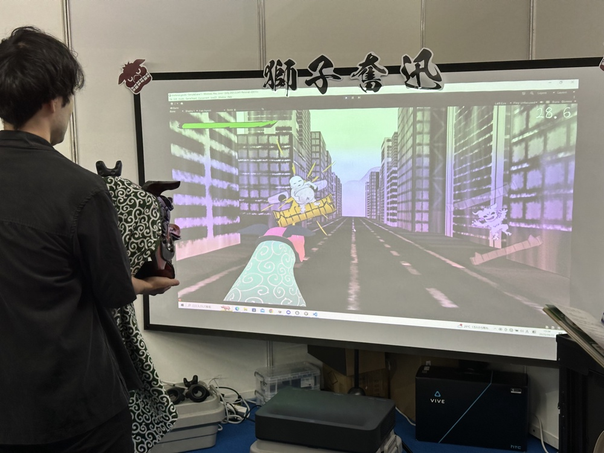

EXPLAIN
東京ゲームショウにて、アクションゲーム「獅子奮迅」を展示。
６人のメンバーで制作。リーダーとしてチームのまとめ役に。
「遊んでいる人が、自然と獅子舞を踊っているように見える」ものを目指した。
開発ソフト：Unity, SteamVR, CLIPSTUDIO, Blender, REAPER

操作には実際の獅子舞を使用。動かしたり傾けたり噛み付いたりして次々現れる敵を倒していく。

毛筆風の洋風なキャラクター、水墨画風のビル街の背景など、古今和洋折衷を意識し製作した。
x21010
ando kaisei